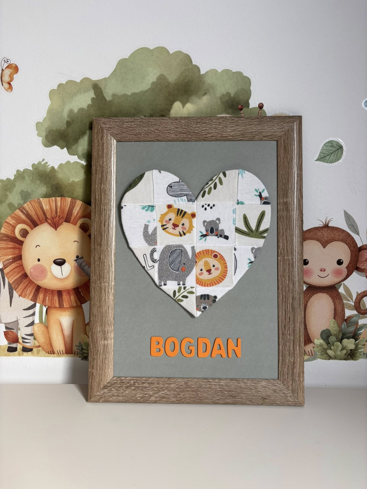

Din Atelierul Nostru

Tudor

Cezar

Fir de dor a pornit dintr-o cutie cu hăinuțe pe care nu m-am îndurat să le dau mai departe, primele hăinuțe ale puiului meu🤍. Așa s-a născut ideea de a le transforma în ceva ce pot vedea și simți în fiecare zi. Aici, fiecare tablou este realizat cu răbdare și suflet, pentru a păstra vie o perioadă care trece mult prea repede.
